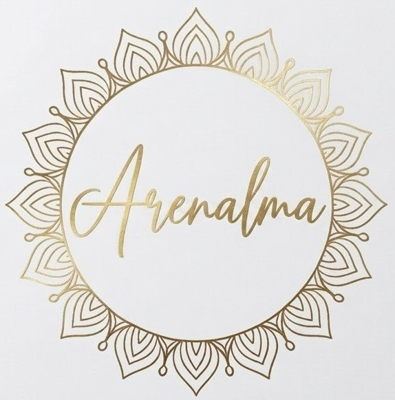

Arenalma
Un oasis sagrado donde la energía viva del océano pacífico y la quietud celestial de la IV Región se funden para restaurar tu paz interior. A través del Reiki Usui, la sabiduría intuitiva de los Oráculos, la amorosa guía de la Angeloterapia y la magia artesanal de nuestros Amuletos en hilo encerado y cristales naturales, te acompañamos a volver al centro de tu ser.
100%
Tejido Artesanal a Mano
Cristales
Piedras Naturales Purificadas
Consagración
Cargados con Reiki & Amor

Nuestros Servicios Holísticos
Sesiones diseñadas con profundo respeto, calidez y confidencialidad en La Serena y Coquimbo, además de modalidad a distancia para todo Chile y el mundo.
Reiki Usui Tradicional
Terapia de canalización de energía vital universal a través de la imposición sutil de manos. Restaura el flujo natural en tus 7 chakras, alivia el agotamiento físico-emocional y promueve un estado de profunda serenidad.
- Limpieza y desbloqueo de centros energéticos
- Alivio del estrés, ansiedad y fatiga mental
- Sahumado con hierbas sagradas previo a la sesión
Lectura de Oráculos Terapéuticos
Una mirada consciente y compasiva a través de barajas de oráculos para iluminar las dudas de tu presente. No busca predecir un destino fijo, sino mostrarte el camino de mayor sincronía, empoderamiento y aprendizaje para tu alma.
- Tirada general o enfoque en temas específicos
- Mensajes de tus guías y sabiduría elemental
- Resumen fotográfico de tu lectura enviado a tu móvil
Angeloterapia
Espacio de sanación espiritual asistido por la frecuencia de amor incondicional de los Ángeles y Arcángeles (Miguel, Rafael, Gabriel, Chamuel). Permite cortar lazos de dolor, recibir orientación sobre tu misión y envolverte en su manto protector.
- Canalización de mensajes de tus Ángeles guardianes
- Sanación del cuerpo emocional y duelo del alma
- Sellado áurico con luz arcangélica dorada
Pack "Reconexión del Alma"
La experiencia completa y transformadora de Arenalma. Combina una sesión profunda de Reiki, lectura de Oráculo/Ángeles para darte claridad, y la entrega de un amuleto tejido a mano en hilo encerado con el cristal consagrado específicamente para tu proceso.
- Sesión completa de Reiki Usui + Armonización
- Tirada de Oráculo & Canalización Angelical
- Amuleto de pulsera o collar incluido y cargado con tu intención
Amuletos & Joyería Consciente
Cada pieza es tejida artesanalmente a mano por la creadora con hilo encerado de alta resistencia (resistente al agua, hipoalergénico) y piedras y cristales naturales auténticos. Puedes comprarlos de forma directa o integrarlos consagrados en tu terapia.
Collar Sagrado "Templo de Luz"
Inspirado en la frecuencia de los templos antiguos y las aguas de Coquimbo. Tejido en hilo encerado aqua y hebras doradas con nudos de ascensión y sabiduría.
Gargantilla Mística Piedra Luna
Tejida a mano en hilo encerado café cálido con micropuntos de macramé. Conecta con tus ciclos naturales, la energía lunar y despierta tu intuición.
Pulsera Escudo Turmalina
Tejido de macramé plano en hilo encerado negro azabache de máxima resistencia. Repele energías densas y te mantiene firmemente enraizada/o.
Collar Corazón Cuarzo Rosa
Engarzado artesanalmente en hilo encerado tono arena rosada. Abre el chakra anahata, sana memorias afectivas y despierta el amor incondicional hacia ti misma.
Pulsera Armonía Amatista
Tejido de nudo serpiente en hilo encerado ciruela místico. Calma la mente hiperactiva, disuelve el insomnio y transmuta cualquier pesadez en luz violeta.
Collar Sagrado Lapislázuli
Piedra emblemática de nuestra cordillera norte. Favorece la expresión clara y honesta de tu verdad, estimula el tercer ojo y la conexión con tus planos superiores.
Pulsera Fuerza Ojo de Tigre
Tejido macramé en hilo encerado tono tierra y madera. Aporta seguridad en ti misma, desbloquea el plexo solar y atrae la prosperidad a tus proyectos.
Amuleto Personalizado a Tu Medida
¿Buscas un diseño único? Elegimos juntas la piedra y los colores de hilo encerado según tu fecha de nacimiento o tu intención específica. Se teje exclusivamente para ti.
¿Deseas incluir tu amuleto directamente durante tu sesión de Reiki u Oráculos?
Consultar por Terapia con Amuleto vía WhatsAppPreguntas Frecuentes
Resolvemos tus dudas sobre nuestras sesiones y amuletos artesanales.
La energía no está sujeta al tiempo ni al espacio físico. En las sesiones a distancia nos conectamos a la hora acordada mediante videollamada para una breve conversación inicial. Luego te recuestas en un lugar tranquilo de tu hogar con música suave mientras canalizamos el Reiki a través de tu campo áurico. Al finalizar, compartimos las sensaciones y mensajes percibidos.
Contamos con un espacio acogedor y armonizado especialmente acondicionado en La Serena y Coquimbo (cercano a sectores de fácil acceso y estacionamiento). Una vez que agendas tu hora por WhatsApp, te enviamos la dirección exacta y recomendaciones para tu llegada.
¡Sí! Utilizamos hilo encerado brasileño de primera calidad (Linhasita), el cual repele el agua, no se deshilacha, no junta malos olores y no pierde su tonalidad original. Puedes ducharte o ir a la playa con él tranquilamente.
Cada amuleto que entregamos ya va limpio y cargado con Reiki. Cuando sientas que ha absorbido energías densas, puedes sahumarlo con humo de palo santo, salvia blanca o dejarlo reposar toda la noche a la luz de la Luna Llena. Evita sumergir cristales porosos como la selenita en agua con sal.
Por supuesto. Si tienes en mente un cristal específico (malaquita, citrino, selenita, aguamarina, etc.) o un color de hilo especial, escríbenos directamente por WhatsApp y la creadora diseñará tu pieza personalizada.